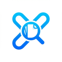

Collect with control
Gather tabs from the current window or all windows. Search by title or URL, skip the active tab, and remove duplicate links.

Link CollectorA simpler way to save your tabs
Collect links from your open tabs, filter out what you don't need, and export them in the format that fits your workflow. Lightweight, private, and entirely on your device.
For Chrome. No account required; your browsing data stays on your device.
Gather tabs from the current window or all windows. Search by title or URL, skip the active tab, and remove duplicate links.
Copy URLs as plain text, title and URL, Markdown, HTML, CSV, or JSON. Use Text Mode to edit or open a list of links.
Link Collector runs locally in your browser. It does not send your tabs or other personal data to external servers.